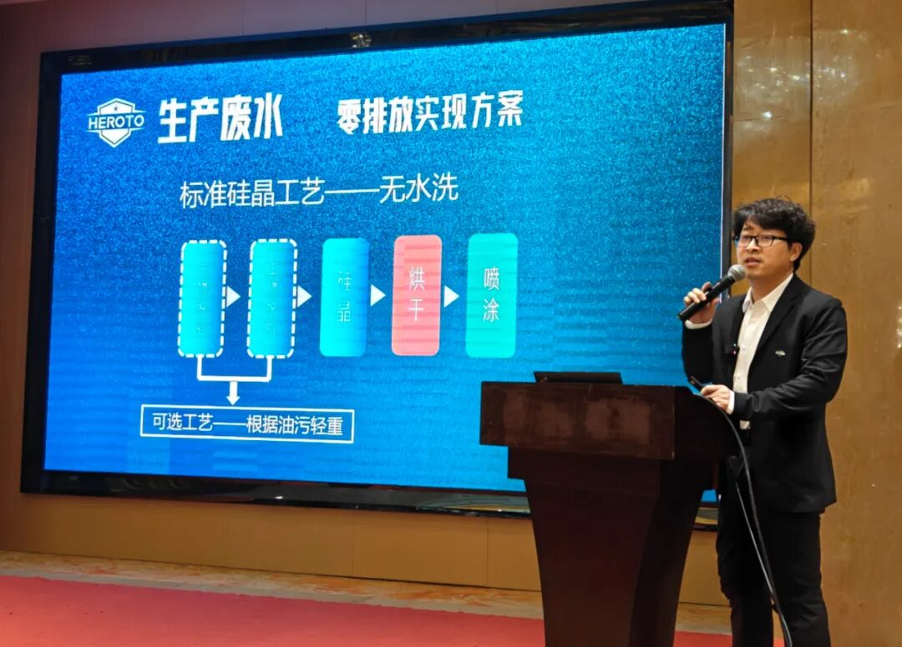
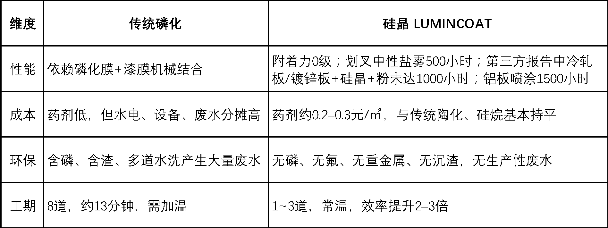
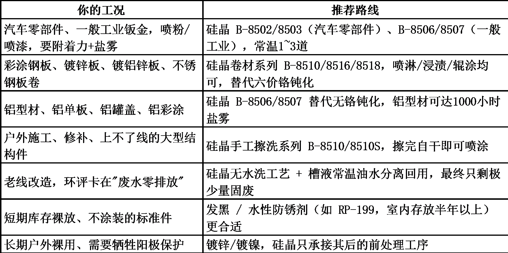

封面候选 · 渠道裁切与使用范围待客户确认
制造业 · 涂装前处理3、选磷化、发黑、镀锌还是硅晶？一张表终结涂装前处理选型纠结
和拓化学 · 企业技术内容 / 排版稿 v3 / 1819 字符
在涂装前处理这件事上，采购、工艺、品质三方最容易吵起来：采购盯着药剂单价，工艺盯着工序数和节拍，品质盯着盐雾和附着力。结果往往是——选了单价最便宜的药剂，却在电费、水费、废水处理费和返工率上加倍还了回去。

原稿配图 · 正文块 4；图示内容请客户复核本文不做产品推销，只做一件事：把几条主流工艺路线摆进同一张表，按性能、成本、环保、工期、适用场景五个维度横评，把"选哪个工艺"这个问题一次讲清楚。
一、先分清楚：你要的是"最终防护层"，还是"涂装前的打底层"？
这是选型的第一道分水岭，也是最多人踩的坑。
如果零件喷完漆或喷完粉就出厂，核心诉求是"漆膜不掉、不锈、耐盐雾"，那你要的不是一层厚重金属镀层，而是一层能把基材和油漆长在一起的打底膜。硅晶、磷化、陶化/硅烷属于这一类。
如果零件是裸着用的，靠自身表面扛腐蚀（标准件、液压件、户外结构件），那对标对象才是发黑、镀锌、镀镍这类最终防护层。
赛道选错，后面所有对比都是白比。
二、硅晶 vs 磷化：8道工序和1~3道工序的差距
传统磷化（汽车零部件/一般工业）的标准流程是：预脱脂（50℃，3分）→ 脱脂（50℃，2分）→ 水洗 → 水洗 → 表调 → 磷化（40–50℃，3分）→ 水洗 → 水洗 → 烘干。8道工序、约13分钟，全程要加温、要排渣、要处理水洗废水。
 和拓宣传册 2025 · 原图 4（宣传资料，指标须另附检测或测算依据）
和拓宣传册 2025 · 原图 4（宣传资料，指标须另附检测或测算依据）硅晶工艺是：硅晶B →（硅晶B）→ 烘干。1~3道工序，常温浸泡6–10分钟 / 喷淋3–5分钟，完全无渣、免水洗。
四个维度的实际差别：

原稿配图 · 正文块 24；图示内容请客户复核一家钣金喷涂企业的实测账单：前处理水槽由7个减至2个，每月省电费约3.43万元、水费8100元、废水处理费3.75万元，合计约7.99万元/月，全年约95.9万元，前处理综合成本下降50%以上。
三、硅晶 vs 陶化/硅烷：差的不是药剂，是那两道水洗
锆系/普通硅烷陶化比磷化已经进步不少，但标准流程仍是7道工序：预脱脂 → 脱脂 → 水洗 → 硅烷陶化 → 水洗 → 纯水洗 → 干燥，还需50℃加温。
硅晶把它压到1~3道、常温、免水洗、无渣。别小看最后两道水洗——它决定了你要不要建废水站、要不要过环评。
更实际的一点是：少一道水洗，就少一次"洗完又返锈"的风险。某汽车零部件厂生产车用空气干燥罐，原陶化工艺喷涂后要滚边铆合、180度折弯，漆面开裂，不合格率超20%；改为连续三道硅晶B后，不合格率降到1%以下，同时实现废水零排放。
四、硅晶 vs 发黑/防锈：一个管"涂装前"，一个管"库存期"
这两者常被误放进同一张对比表，其实分工完全不同。
 和拓宣传册 2025 · 原图 10（宣传资料，指标须另附检测或测算依据）
和拓宣传册 2025 · 原图 10（宣传资料，指标须另附检测或测算依据）发黑、防锈剂解决的是"裸件在仓库里放几个月不锈"，如水性防锈剂室内存放可达半年以上，适合不后续加工的工件。
硅晶解决的是"涂装前这一到两周怎么办"：冷轧板裸膜放置7–15天不返锈，同时用 Si-O-Me / Si-N-Me 共价键把基材和漆膜锁在一起。
判断标准很简单：零件后面还要不要喷漆/喷粉？ 要，选硅晶；不要且需长期裸放，选发黑+防锈油。注意发黑膜和防锈油都会留膜，后续要涂装还得先除掉，反而多一道工序。
五、硅晶 vs 镀锌/镀镍：不是替代，是"替掉它后面那道工序"
必须说清楚：硅晶不替代镀锌层、镀镍层本身。 一个是纳米级化学转化膜，一个是几十微米的金属镀层，防护机理完全不同。对需要牺牲阳极保护、长期户外裸用的零件，镀锌依然不可替代。
硅晶切入的是镀锌板、镀铝锌板在涂装前的钝化/前处理环节：彩涂钢板、镀锌板前处理目前多用三价铬/六价铬钝化，而六价铬2017年已被世卫组织列为1类致癌物；硅晶不含重金属、无磷、可常温处理，性能可持平或优于六价铬产品，综合成本更低，且能同时处理铁、镀锌、不锈钢、铝及铝合金、铜合金，多金属共线不用分槽。
所以，痛点不是"要不要镀"，而是"镀完之后怎么打底、怎么过环评"时，硅晶才是对标答案。
六、选型指南：按工况对号入座

原稿配图 · 正文块 54；图示内容请客户复核七、给采购的一句话
别只比"每公斤药剂多少钱"。前处理的真实成本 = 药剂 + 电 + 水 + 废水处理 + 设备折旧 + 返工率 + 人工。把硅晶省下的两道水洗、五个水槽和那1500吨/月的废水一起算进去，即便药剂单价贵一点，它依然很可能是更便宜的那一个。
再算一笔隐性账：新项目环评越来越难过，老项目改造越来越贵。一条从源头就不产生生产废水的前处理线，本身就是一张通行证。